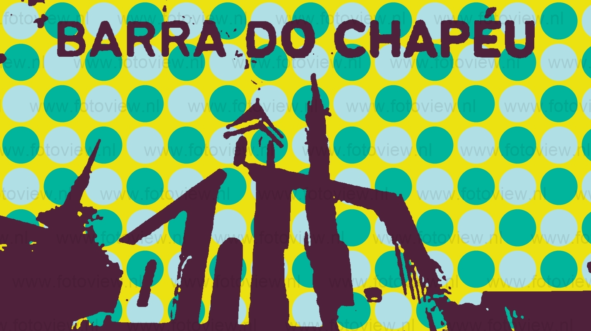

Sua origem, porém, remonta ao ano de 1883, quando era um povoado que se desenvolveu ao redor da igreja de Nossa Senhora da Guia, construída em terras doadas por um morador da região vindo de Minas Gerais, Benedito Rodrigues de Lima, em um lugar chamado Barra
